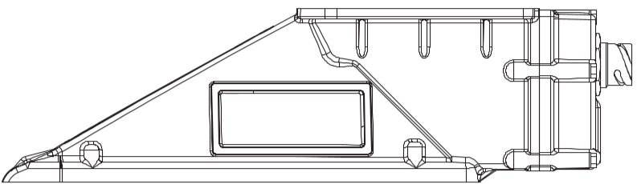
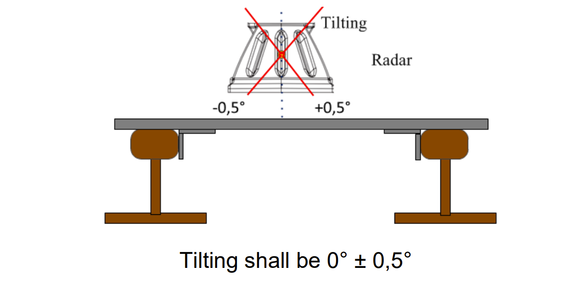
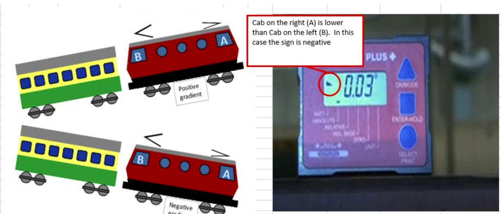

ETCS Inclinometer Helper V2
Pitch Measurement
Installation limit: ±2°. Enter the absolute value from the inclinometer and select the matching triangle.
◢ = left side lower (negative) ◣ = right side lower (positive)
◢ = left side lower (negative) ◣ = right side lower (positive)

◢ left side lower (negative)
◣ right side lower (positive)
°
°
°
Tilt Measurement
Tilt max ±0.5°. Measure the radar from the front at least 3 points.

°
°
°
Track Slope Measurement
Measure point 1: below the ETCS cubicle on its vertical axis.
Measure point 2: 1.5–2 m to the right of point 1.
Measure point 3: 1.5–2 m to the left of point 1.
Points 4–6: same positions as 1–3, but on the second rail.
Measure point 2: 1.5–2 m to the right of point 1.
Measure point 3: 1.5–2 m to the left of point 1.
Points 4–6: same positions as 1–3, but on the second rail.

Rail 1
°
°
°
Rail 2
°
°
°
Inclinometer Manual for Clinotronic Plus
- Preparation Outside the Vehicle
- Place the inclinometer on a stable horizontal surface (e.g., a table) and turn it on using the ON/MODE button.
- Use the ON/MODE button to navigate to the ZERO menu. The display should show
00.00. - Press the ENTER-HOLD button and do not move the inclinometer. A measurement will take place over 10–30 seconds.
- Once the measurement is complete, a value will be displayed. Rotate the inclinometer by 180° and repeat the previous step.
- After the measurements are complete, the device will automatically switch to the ABSOLUTE mode.
- Track Slope Measurement
- Go underneath the vehicle. If the inclinometer has turned off, turn it back on with the ON/MODE button — it will return to ABSOLUTE mode automatically.
- Measurements are assumed to be taken from outside the vehicle towards the inside.
- Go under the section of the vehicle where the cubicle is located and measure at least three points (calculate the arithmetic mean) approximately 1 meter apart on the rail head (for 20Ev, all measurements should be between the wheels of the first bogie).
- If the symbol
<appears on the inclinometer, the left side is lower than the right. - If the symbol
<appears, cab A is lower than cab B, and the gradient is negative (value multiplied by 10000).
- Relative Mode Calibration and Radar Measurement
- Switch to RELATIVE mode using the ON/MODE button. The display should show
00.00. - Place the inclinometer on the rail head and press the ENTER-HOLD button. Wait approximately 15 seconds until the value
0.00appears. - At this point, hold the inclinometer against the radar and start measurements.
- Measure the radar at least three different points (calculate the arithmetic mean of all points) along the center of the radar.
- Measurements should be taken from the side without a metal plate; the pointed end of the radar should be on the left side of the operator.
- If the symbol
<appears on the inclinometer, the left side is lower than the right, and vice versa. - If the radar's pointed end is downward, the coefficient value is greater than 10000 (e.g., 10027).
- If the radar's pointed end is upward, the coefficient value is less than 10000 (e.g., 9982).
- The pitch must not exceed ±2°.
- The radar should also be measured from the front, but precision is not as critical here (Tilt max ±0.5°).
- Switch to RELATIVE mode using the ON/MODE button. The display should show
- After Measurement
- Record both the OLD values and the new ones in the protocol.
- Apply the measured and TRANSLATED values to the DMI.
- After entering the values and successful calibration, restart the EVC.